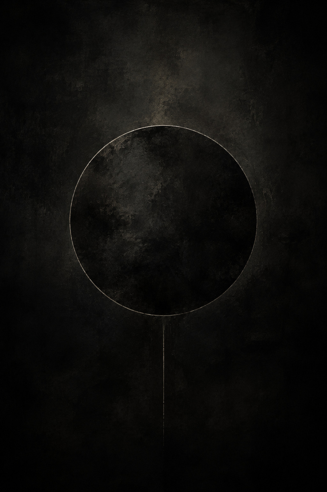
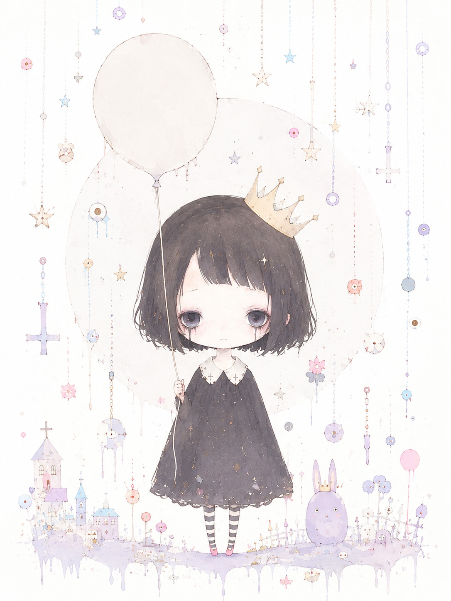
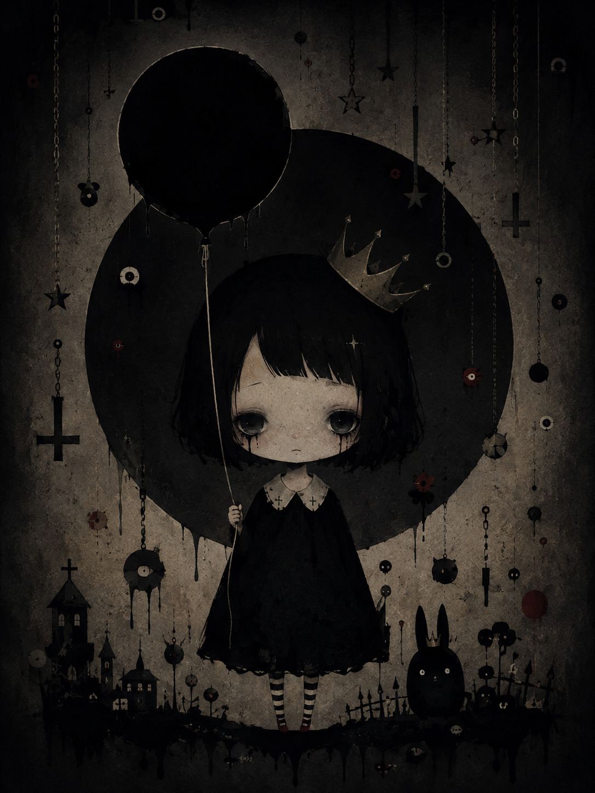

I-Text
2007年5月30日生まれ、作詞家。幼少期から創作を嗜んでおり、自身のnoteでも数多くの作品を投稿している。 Lightpop,Reverpopらを引き入れ2024年8月30日に「FHANTOMUSICA」を結成。第1作目として発表された「傷像」は、 彼の持ち味である独特な世界観を存分に味わうことができる。

Lightpop
2007年8月31日生まれ、作曲家。Reverpopとは双子である。中学時代に作曲に目覚め、王道のロック調からEDMまで、幅広いジャンルを扱う。 2024年11月3日に発表された第2作目である「PoPlanet」は、様々なジャンルを行き来する、彼女以外では成しえない曲である。

Reverpop
2007年8月31日生まれ、イラストレーター及び動画クリエイター。Lightpopとは双子である。幼少期から絵を描いており、中学時代には動画編集の勉強を始める。 2026年5月15日に発表された第6作目である「LooPlanet」は、混沌と秩序が混在し、シーンが目まぐるしく変わる大作である。